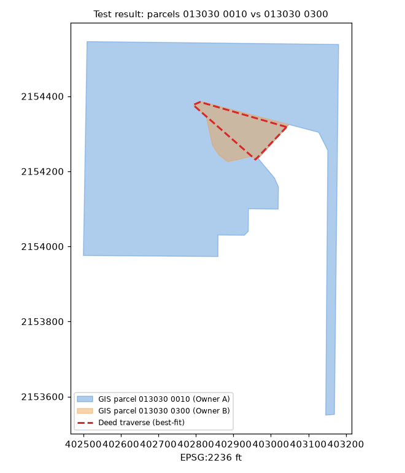

contained_parcel · glossary · deed-checked (test)
Owner A is outside Owner A Ridge by record; cut Owner A from Owner A
Proposed · test result · high · status: proposed (not applied, not a finding) · overlap 21798.54 sq ft
larger parcel's legal excepts a deed of the smaller parcel
Parcels & ORB references
| parcel | owner (PA) | ORB book-page |
|---|---|---|
| 013030 0010 | Owner A | 20536-00187, 20427-02030, 19128-02196, 18341-00341, 12782-00217, 12782-00215 |
| 013030 0300 | Owner B | 13639-00288, 10793-00035, 06873-01960, 06434-00478 |
Deed traverse · ORB 13639-288
—
Green = deed calls drawn segment by segment (best-fit placement, no monument tie); orange/red = GIS outlines.
Deed evidence
{"Owner A": "ORB 13639-288 (WD 2006, metes & bounds w/ lake meander)", "Owner A": "ORB 20536-187 (WD 2022, plat ref Tracts 12-13 Blk 1 PB 5-93)"}
acres record cogo chorded: 0.339 · acres gis Owner A: 0.5 · acres gis Owner A: 7.382
- Owner A deed ORB 20536-187 (plat reference, no bearings) expressly excepts 'Official Records Book 13639, Page 288' = the Owner A deed
- Owner A COGO matches GIS on bearing sides (IoU 0.667, chorded lake side 220.8 ft vs 344 ft meander explains 0.34 vs 0.50 ac)
- GIS Owner A 100% inside GIS Owner A
Overlay figure

Figure generated from county GIS outlines and the best-fit deed traverse (no aerial basemap; parcel IDs only). Data quality test result, not authoritative.